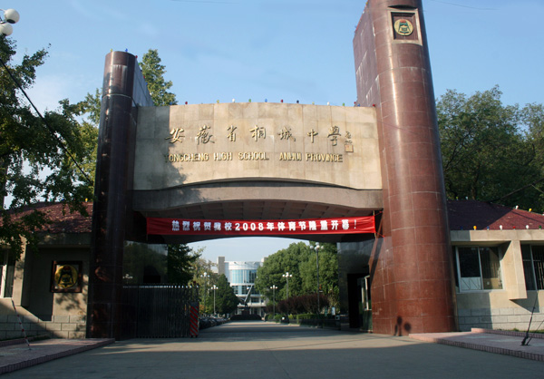

六尺巷
六尺巷
万里长城今犹在，不见当年秦始皇。
文庙

文庙
蛱蝶自来还自去，不分菜圃与邻家。
桐城中学

童向花茵成梦寐，客同露坐说平生。桐城中学
夜凉无数残砧起，千里婵娟共此情。
紫来桥
春阴溶溶花乱飞，柳色向暮黄莺啼。清池落影净相照，槁首无复朱颜时。 回头却共少年语，来日之日知何许。莫道流光不负人，风雨忧愁半寒暑。紫来桥
文和园
文和园
文和园位于安徽省桐城市龙眠街道双溪村，占地七千余平方米，是清朝大学士张廷玉的陵园。既有园林空灵蕴藉的风趣，又不失墓地庄严肃穆的氛围。陵园分墓区和享堂两个部分。
墓区庄严肃穆，气势恢宏。石狮、石虎、石羊、石马鳞次栉比，文俑、武俑、龟跃相对排列，苍松、翠柏、银杏绿树成荫。享堂内陈有张廷玉座式绣像、香炉、供桌，两则悬有张英、张廷玉亲笔楹联。1998年，安徽省人民政府公布张廷玉墓地清代石雕刻群为省级重点文物保护单位。
孔城老街
孔城老街坐落于安徽省历史文化名镇孔城镇境内，距桐城市12公里。孔城老街已有1800多年历史，明清期，孔城老街作为连接巢湖地区和长江地区的重要水运码头日益繁荣，太平天国时期，孔城遭到破坏，但不久即恢复，现有老街即太平天国以后建设的。
老街绵延数里，分为十甲。每甲之间有闸门隔挡。南北走向，呈“S”形，地势南低北高，一条主街，两条横街，另有三巷一弄。总长约3公里，街道宽度为3米左右，街、巷、弄路面均为麻石所铺，总面积17万平方米。店铺房舍皆为青砖灰瓦，多具飞檐翘角，木镂花窗，栉次鳞比，颇具江南水乡特色。
孔城老街